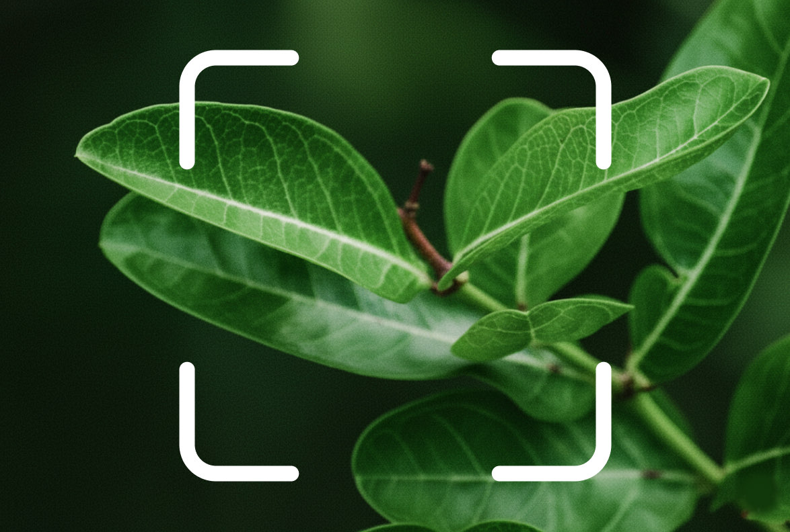
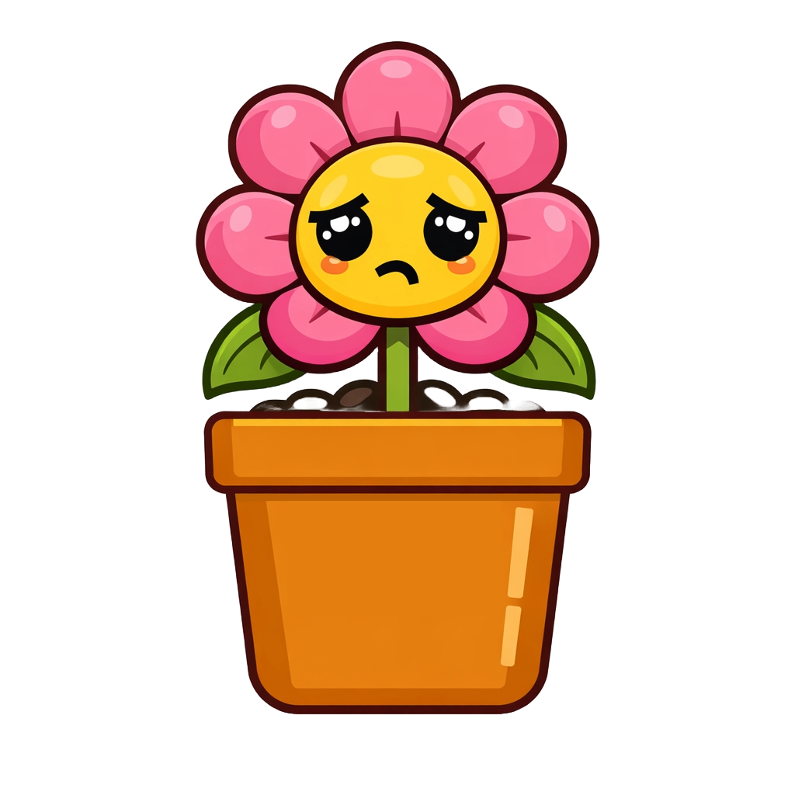

Plant Doctor
Identify, heal, and care for your greenery with pro-grade precision.
Identify Instantly
Discover the secrets of your garden. Point your camera at any tree, shrub, or houseplant to identify it among over 100,000 species instantly.

Save Your Plants
Is your plant looking sad? Our specialized diagnosis lens identifies diseases, pests, and nutrient issues, giving you a clear path to recovery.

Green Thumb Features
Watering Guide
Personalized schedules based on species and local climate.
Growth Tracker
Monitor your plant's progress with AI growth analysis.
Light Meter
Ensure your plants get the perfect amount of sunlight.
Talk to a Plant Guru
Our human experts are ready to help with your most difficult plant questions 24/7.
Get Expert Help View in App Store